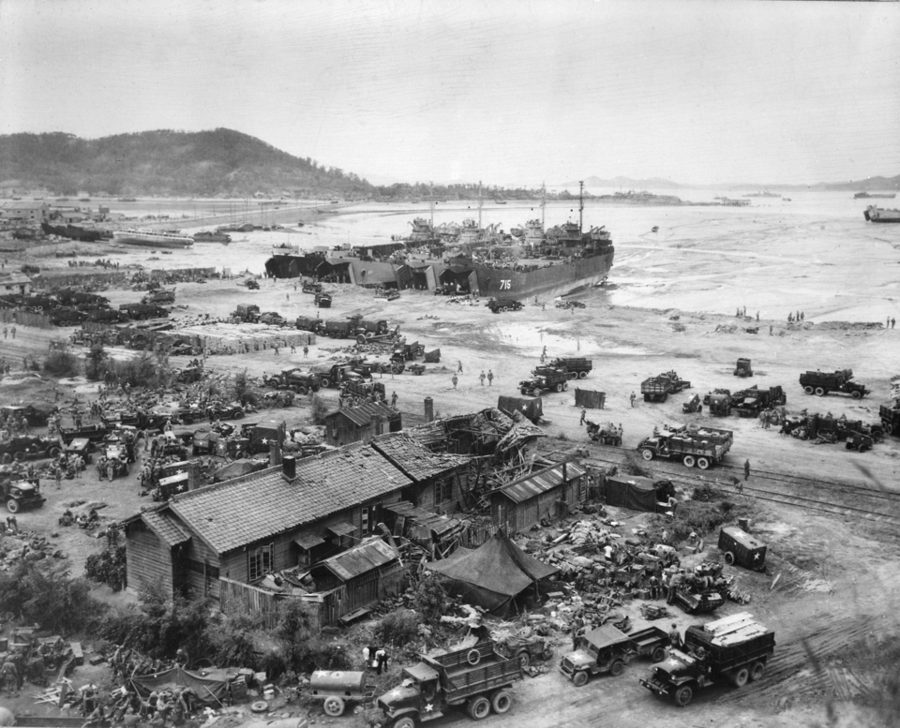
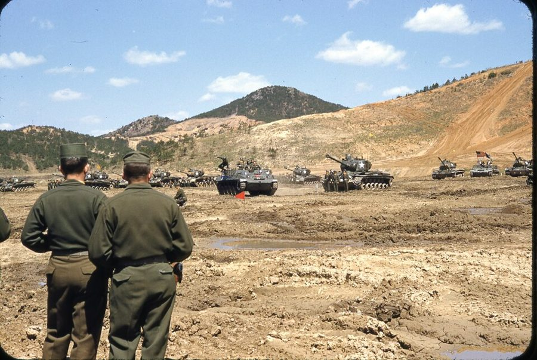
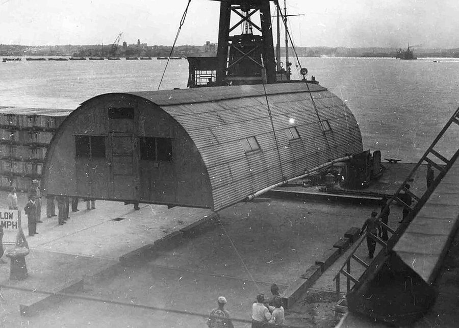
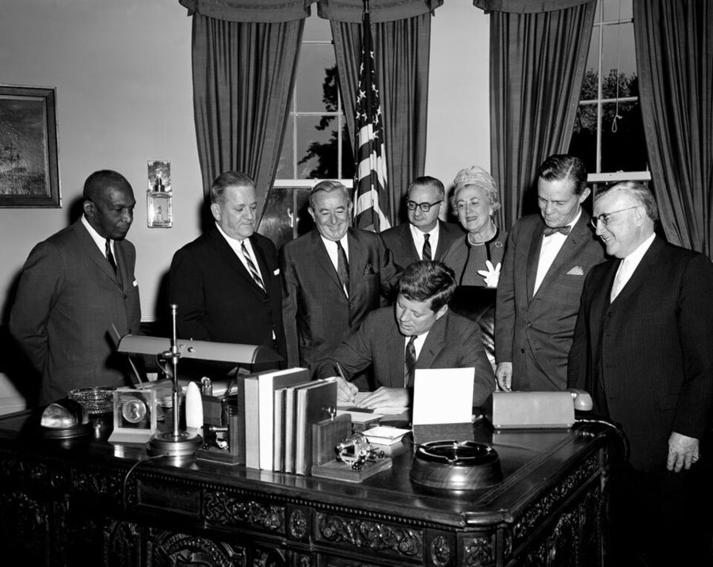
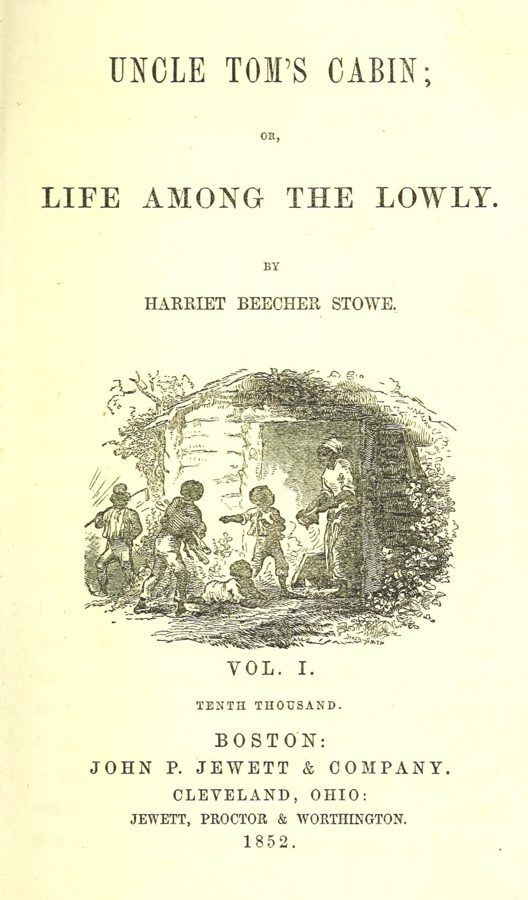

这一页在做什么
从 1960 年 4 月写到 1965 年。他在 Fort Stewart 被连长以违抗命令送上简易军事法庭，自己辩护，判了无罪，随即被调去韩国；临走和 Connie 结了婚。在韩国他一边练唐手道，一边写信抗议种族歧视，一封长信登上了费城一家黑人报纸的头版。退役后两人攒钱搬到洛杉矶，他上了大学，在预备役里接着捣乱，又写信给肯尼迪总统。读的时候抓两条线：他怎么拿规则对付规则；写书时的他怎么回看当年的自己。

1950 年 9 月 15 日，仁川登陆时几艘坦克登陆舰（LST）在仁川的滩头卸人卸车。比作者到仁川早十年，与本书无关。§7 第 80 段：他坐的运兵船停在海上，也是 LST 把士兵渡上岸。US Navy，公有领域，维基共享资源 读之前：这一页在他一生的哪里
上一页停在 1960 年 3 月：他在 Fort Stewart 当营部首席文书，闯过种族隔离的舞会，申请调离南方被驳回。这一页从 4 月初的一次内务检查接上，写到 1965 年拿到退伍证书，他从 24 岁走到 29 岁。这几年美国的民权运动一浪高过一浪：1960 年南方的大学生在午餐柜台静坐，1963 年伯明翰的游行和华盛顿大游行，1964 年国会通过《民权法》。他到韩国时，那里刚因学生运动换了政府。
读的时候带着这几个问题。不用先找答案，读完回来对照「检查一下理解」。
他打赢了军事法庭，却输给了一次「公假」。他熟悉规则，这份本事在哪里管用，在哪里不管用？§6
在韩国他用了好几种办法对付种族歧视：写信、和军官顶嘴、在表格上做手脚。哪些是正面抗议，哪些是存心捣乱？§7
书里影印了他 1960 年和 1963 年写的信。拿它们和写书时的口气比一比，哪里像同一个人，哪里不像？§7
他说搬去洛杉矶是一生最好的决定。这个决定是怎么做成的，靠的是什么？§8
分节地图
这一页是原书第 3 章的后四节（第 3 章的前五节在上一页）。粗体是这一节的地标；斜体是英文这一节开头的几个词，在 Kindle 里搜它就能跳到那里，错字照电子书原样。读完打个勾。
摆装备受检，自己当辩护人约 800 词 Although I was bad news for … 一道口头命令变成一场军事法庭。中间夹着两张文件图，第 71 段是转折。 调往韩国：仁川、首尔、大邱约 1700 词 When I reported back to … 先结婚、坐船，再到韩国写信抗议。第 96–98 段是写书时的回看。 回费城开出租，开车去洛杉矶约 400 词 In mid-June 1961, I took … 退役回家，攒钱，说服 Connie 一起西行。留意钱数和日期。 北好莱坞的预备役，给总统的信约 600 词 The history of my military career … 在预备役里又捣乱两回；第 110 段是他对两年兵役的总结。
出场的人
按出场顺序。军中的人、家人只写书里说的；公众人物写生卒年。
Captain Smit H&S 连连长，上一页出过场 第 55 段：以违抗命令把作者送上简易军事法庭。作者无罪后，据说他气得要命（第 64 段）；作者拟好了反告他的材料，没告成。
Sergeant Bradford 连里的军士，文件上是一级军士长 第 56 段：巡营房时命令作者把全套装备摆在床上受检。庭上和 Smit 一样，说作者几乎是他们见过最差的兵（第 62 段）。
另一名军士 书里没写名字 第 56–57 段：叫作者收起装备去上班；到了连长面前，却说那天早上根本没见过他。
Lawrence Harvey 作者在营里唯一的好朋友，上一页出过场 第 63 段：出庭作证，说那天早上看见作者摆好了装备。第 73 段作者离开 Fort Stewart 前和他道别。
sergeant-major 营部的军士长，作者的上司，上一页出过场 第 65 段：判决后笑着让作者自己打出这场军事法庭的正式记录。
营长 书里没写名字 第 71 段：看了作者控告 Smit 的材料，很同情，劝他先休公假回家歇歇。起诉书上有一行「奉 McNamara 中校之命」（和后来的国防部长不是一个人）。
Connie 作者的女朋友，后来的妻子 上一章出过场。第 76 段：1960 年 5 月 31 日两人结婚。他在韩国时两人靠信和录音带商量将来；她在人造首饰厂做工，一起攒钱去洛杉矶（第 100 段）。
Pops 作者的继父 上一章出过场。第 73 段：见作者突然回家，以为他开了小差；第 99 段悄悄安排早点吃完饭，好让 Connie 带他去看新租的房子。
Sun Song Gee 大邱的唐手道教练 第 84 段：作者几乎每晚在营外的道馆跟他练，练到黑带一段。
Robert Nix 1898–1987，公众人物 费城的联邦众议员（1958–1979 年在任），宾夕法尼亚州第一位黑人国会议员。第 86 段：作者写信投诉的对象之一。
黑人随军牧师 书里没写名字 第 97–98 段：一位军官安排作者和他谈。他讲军队这些年的进步，最后送了作者一句「蜂蜜比醋招苍蝇」。
Alfred B. Fitt 1923–1992，公众人物 1963 年 7 月起任国防部第一位主管民权的副助理部长。代总统回了作者的信（第 117–119 段的图）；书里正文只说是「助理部长」回的信。
背景：作者默认你知道的事
按在书里出现的顺序排，标题前是节号。这里只讲事情本身，作者怎么看放在后面几节。
§6 简易军事法庭和《统一军事司法法典》
1950 年代美军的 Patton 系列坦克在野外列队。作者所在的营叫第 32 装甲团第 3 中型坦克营（Patton），Patton 就是营里坦克的名字。图的标题写 M48，说明写 M47，两种都属 Patton 系列；地点没写。与本书无关。US Army，公有领域，维基共享资源 美军的军法是 1950 年通过的《统一军事司法法典》（UCMJ）。军事法庭分三级，最轻的是简易军事法庭（summary court-martial）：只由一名军官审，只审士兵的轻罪，最重的处罚也只有一个月的禁闭、扣薪、降级。被告可以拒绝由它审，案子就改交更高一级的法庭。书里引的三款条文其实是第 92 条（不服从命令或规章）的文字，起诉书上写的第 91 条，管的是对士官、准尉的违抗和不敬（第 58–61 段）。第 93 条管虐待下属（第 69–70 段）。
4 月 2 日前后
叫他摆装备受检
第 56 段
4 月 4 日
起诉：违抗命令
起诉书的图
4 月 5 日
简易军事法庭
判无罪
不到一周后
拟好控告 Smit
第 69 段
营长劝他
先休公假回家
第 71 段
约两周后回营
调令：去韩国
第 72 段
5 月 31 日
和 Connie 结婚
第 76 段
6 月 5 日起
Oakland → 仁川
海上 19 天
本站示意图：1960 年 4 月到 6 月。4 月 4 日、5 日取自书里影印的起诉书和审判记录，其余取自正文。浅色两格是转折：赢了官司，又接受了那次休假。 §7 坐运兵船去韩国
一座半圆拱顶的铁皮营房（Quonset hut）被整座吊起，搬去改作办公室。1947–48 年，战后的日本。第 80 段：在仁川，下船的士兵就在几座这样的营房前排队领分配。与本书无关。US Army Corps of Engineers，公有领域，维基共享资源 朝鲜战争 1953 年停战，美军一直留驻韩国，作者说海外服役一期是 13 个月（第 72 段的 tour of duty）。去韩国的兵先到加州的奥克兰陆军码头（Oakland Army Terminal），坐运兵船横渡太平洋。仁川港潮差大，大船靠不了岸，就停在海上，由坦克登陆舰（LST）把人渡上岸。Quonset hut 是二战时大量生产的预制营房，半圆的拱顶用波纹铁皮做成，几天就能搭好。第 81 段他在表格的种族一栏勾了 Caucasian（白种人），准尉说他其实是 Negro（黑人）：Negro 是那时的正式用语，今天不用。
§7 1960–61 年的韩国，和唐手道他在韩国这一年的前后，那里有两次政治变动：他到之前两个月，1960 年 4 月学生示威，李承晚总统下台；他回国前一个月，1961 年 5 月 16 日朴正熙发动军事政变。书里都没提。他先在首尔的军邮局（APO，Army Post Office）当邮务员，后来调到南部城市大邱（书里拼作 Taegu，今天拼 Daegu）的第八集团军通信营。唐手道（Tang Soo Do）是韩国的一种空手道，名字就是「唐手之道」。注意：上一页第 18 段那张照片的图注说，他在首尔的第一份差事是保养卡车，和第 83 段说的军邮局对不上。
§7 黑人报纸和黑人议员
1961 年 5 月 18 日，肯尼迪在白宫会见宾夕法尼亚州的国会议员。照片说明列的第一个名字是 Robert N. C. Nix（§7 第 86 段他写信去的议员），但没写谁站在哪。Robert Knudsen，白宫摄影师，公有领域，维基共享资源 那时美国不少城市都有黑人自己办的报纸，登白人报纸不登的新闻。The Philadelphia Independent 是费城的一家黑人周报，1931 年创刊，1971 年停刊，报头印着「世界最伟大的黑人小报」。它的老对手是 Philadelphia Tribune。Robert N. C. Nix 1958 年当选联邦众议员，是宾夕法尼亚州的第一位黑人国会议员，选区在费城（第 86 段）。给本选区的议员写信，是美国人投诉政府机关的常用办法；议员办公室常会把信转给有关部门，要个说法。
§7 Uncle Tom
Harriet Beecher Stowe 的小说《汤姆叔叔的小屋》1852 年第一版第一卷的书名页。Harriet Beecher Stowe，公有领域，维基共享资源 Uncle Tom 出自《汤姆叔叔的小屋》（1852）。小说里的汤姆是个虔诚的黑奴，宁可被打死也不出卖别人，是个受难者的形象。后来流行的舞台改编把他演成了对白人百依百顺的老好人，二十世纪起，Uncle Tom 成了骂黑人的重话：讨好白人、出卖自己人。分量很重，黑人之间这样骂人，近乎骂叛徒。第 98 段作者当时心里这样骂那位黑人牧师，写书时承认自己错了。
§9 六年的兵役义务和预备役五十年代美国实行征兵。1955 年的《后备部队法》（Reserve Forces Act）把年轻人的服役义务总长定为六年：现役服完，剩下的年头在预备役里服。作者说他那时是两年现役、两年积极预备役、两年非积极预备役（第 103 段）。积极预备役要定期参加集训，可以被召回现役；非积极预备役平时不用去。hardship release 是因个人困难申请提前解除，作者自己说他编了个理由（第 109 段）。
1959
1960
1961
1962
1963
1964
1965
1966
规定（第 103 段）
两年现役
两年积极预备役
两年非积极预备役
他实际的经过
南方
韩国
费城 → 洛杉矶预备役
非积极
1963 年给总统写信后
1965 年证书
本站示意图：上面一条是作者说的规定，下面一条是书里给的经过。入伍 1959 年 8 月，退役 1961 年夏，退伍证书 1965 年；1963 年提前解除积极预备役的月份书里没写，图上是大概位置。 §9 1963 年：给总统写信的那一年他 1963 年 5 月 29 日写信给肯尼迪（John F. Kennedy，1917–1963），正是民权运动最激烈的一年：4、5 月伯明翰的游行遭警犬和高压水龙驱散；6 月 11 日肯尼迪发表电视讲话，随后向国会提交民权法案（就是 1964 年 7 月签署的《民权法》）；同月，总统的军中机会平等委员会（Gesell 委员会）交出报告；7 月 26 日国防部长 Robert McNamara 签发 5120.36 号指令，要求指挥官反对基地外针对军人的歧视，起草它的就是 Fitt；8 月 28 日华盛顿大游行。国防部 9 月 18 日回信，三天前伯明翰一座黑人教堂刚被炸，四个女孩遇难。
书里的剪报和文件
这几份在 Kindle 上是图片，字小，搜不到，长按也查不了。这里给大意，读者对着图看；图里难的词放在每块后面。它们是作者当年写的或收到的东西，不是 2010 年写书时的说法。
§6 第 66–67 段 · 1960 年 4 月的起诉书和简易军事法庭审判记录在第 65 段（…recorder of his own court-martial.）之后，两张表格。正文里说的 see page 51、see page 52 是纸书页码，Kindle 上对不上，指的就是这两张。下面那行孤零零的 3d k 是图上漏出来的字，不是正文。
大意： 第一张是起诉书：列兵 Walter E. Williams 被控在 1960 年 4 月 2 日前后故意违抗一级军士长 Bradford 让他把全套装备摆在床上的合法命令，违反 UCMJ 第 91 条；4 月 4 日宣誓提出，副官监誓，连长签字告知被告，以营长的名义交付简易军事法庭。第二张是 4 月 5 日的审判记录：他勾了同意由简易军事法庭审，答辩无罪，判决无罪，没有处罚，审判官是一名中尉。正文第 64 段写的是复数的 officers。
Uniform Code of Military Justice
第 1 行
《统一军事司法法典》（UCMJ）
美军的军法，见「背景」。Article 是「条」。
charge and specification
第 2 行
罪名和罪状
军法文书的固定格式：charge 是违反哪一条，specification 写具体干了什么、何时何地。
3d Med Tk Bn (Patton) 32d Armor
第 3 行
第 32 装甲团第 3 中型坦克营（Patton 坦克）
Med Tk Bn 是 Medium Tank Battalion 的缩写；Hq Hq & Svc Co 是营部和勤务连，就是正文的 H&S Company。
Adjutant
第 7 行
副官
营部管文书和人事的军官，替营长签发文件。
referred for trial
第 22 行
交付审判
有权召集军事法庭的长官（convening authority，这里是营长）决定把案子交给哪一级法庭。
punishment under Article 15
第 1 行
按第 15 条给的非司法处分
连长不开庭就能直接给的小处分（扣薪、禁足、加勤务）。表上勾的是：没有先给他这个选择，直接送了法庭。
CONSENT / OBJECT
第 8 行
同意 / 反对（由简易军事法庭审理）
被告可以拒绝简易军事法庭，案子就改交更高一级的法庭。他勾的是同意。
PLEAS / FINDINGS / SENTENCE
第 15 行
答辩 / 判决 / 刑罚
下一行三栏依次是 Not Guilty、Not Guilty、None：答辩无罪，判无罪，无刑罚。
§7 第 93–95 段 · 1960 年 12 月 Philadelphia Independent 上他从韩国寄去的长信在第 89 段（…my obligations in that light.）之后，先是两张和唐手道教练的合影，接着是两张剪报：第一张是 12 月 17 日的头版，第二张拼着续文、下一期的结尾和一封读者来信。
大意： 报纸称他为「Joe」，分两期登完。1960 年的他说：美国说一套做一套，种族问题给共产党递了宣传武器，会把有色人种推向对方；军队改善了种族关系，但离完全融合还远；讲了 Fort Stewart 的舞会和军事法庭；认为隔离背后是怕异族通婚；说有白人兵教韩国人用侮辱黑人的字眼；结论是法律不能让人相爱，但能立法保证法律面前人人平等。最后是署名隐去的「士兵妻子」来信，说丈夫受过几次威胁。
tabloid
第 3 行
小报（开本小的报纸）
本义指版面只有大报一半大的报纸，这家报纸自己拿它当招牌，不全是今天「八卦小报」的意思。
lip service
第 15 行
口头上的支持，说说而已
miscegenation
第 3 行
异族通婚
旧词，当年主张隔离的人拿它吓人，今天基本不用。美国最后几个州禁止跨种族通婚的法律到 1967 年才被最高法院判违宪。
a mess of pottage
第 8 行
一碗红豆汤（为眼前小利出卖长远的东西）
典出《圣经·创世记》：以扫为一碗汤把长子的名分卖给了弟弟。编者按说这位士兵不会这样出卖自己的权利。
refuge for scoundrels
第 36 行
恶棍的避难所
化用 Samuel Johnson 的名言：爱国是恶棍最后的避难所。信里说不许批评的民主，就成了冒充爱国者的恶棍的避难所。
§9 第 111–115 段 · 1963 年 5 月 29 日他写给肯尼迪总统的信在第 110 段（…nearly forty-eight years later.）之后，五张图：信头、三段正文、结尾和署名。正文第 109 段说的 See pages 64-65 是纸书页码，指的就是这几张和后面的回信。
大意： 1963 年的他以预备役军人的身份写信，问三军总司令：一个被剥夺选举权、受尽羞辱的美国黑人，对军队的义务和白人兵有什么不同？他说白人兵的父亲也许是杀过美国人的纳粹，却比忠诚早已证明的黑人享有更多。他一连问：黑人该不该免除兵役、该不该应征、该不该纳税，还是该像开国先贤那样不服从错误的东西？最后说他不能接受二等公民的身份。
Through no choosing of my own
第 1 行
并非出于我自己的选择
他是被征召的，服预备役是法定义务，不是自愿报名。
Commander-in-Chief
第 4 行
三军总司令
美国宪法规定总统是陆海军总司令，所以他以军人身份直接写给总统。
disfranchisement
第 6 行
被剥夺选举权
当时南方各州用人头税、识字测验等办法挡黑人投票，1965 年《投票权法》以后才大体废除。
answer the draft call
第 3 行
应征入伍
answer 在这里是「响应（召唤）」。
§9 第 117–119 段 · 1963 年 9 月 18 日国防部的回信紧接在给总统的信之后，三张图：信头、第一段、正文和署名。
大意： 信头是国防部人力助理部长办公室，落款是主管民权的副助理部长 Alfred B. Fitt（正文第 109 段说是助理部长）。他说总统把信转给他回复，为迟复致歉；黑人长久以来没享受到公民权利仍承担公民义务，说明他们信守美国的理想；随着待通过的立法、国防部要求指挥官在基地外推动机会平等的新指令和各方的努力，黑人的处境会大大改善；理想社会不会一夜到来，但说这些承诺是「空的」，理由会越来越少。
MANPOWER
第 4 行
人力（事务）
信头的意思是国防部主管人力的助理部长办公室；民权事务归这个办公室管。
directive
第 10 行
（行政）指令
多半指 1963 年 7 月 26 日 McNamara 签发的 5120.36 号指令，见「背景」最后一块。
the millennium
第 15 行
理想社会，太平盛世
本指基督教里基督再临、统治一千年的太平时代，引申为「一切问题都解决了的那一天」。
Deputy Assistant Secretary
第 23 行
副助理部长
比助理部长低一级。正文说回信的是 the assistant secretary of defense，落款其实是他的副手。
词与短语
你用 Kindle，单个生词长按就能查，这里只收词典帮不上的：每个词都认识、合起来不懂的说法，口语和俚语，那个年代的说法，反话。斜体小字是原句里连续的几个词，错字照电子书原样，搜它就能跳到那里。点「记下」收进词本。
§6 摆装备受检，自己当辩护人
bad news
… I was bad news for my …
（对某处来说）是个麻烦人物
本义「坏消息」。说一个人是 bad news，就是谁沾上他谁倒霉。
respected, if not liked
… I was respected, if not liked, by …
受人尊重，虽说未必招人喜欢
if not 在这里是让步：「就算不……」，不是「如果不」。
lodge charges
… managed to lodge serious charges against me …
正式提出指控
lodge 作动词是「（向机关）正式提交」，如 lodge a complaint。managed to 带一点讽刺：他总算找到了机会。
summary court-martial
… faced with a summary court-martial …
简易军事法庭
最低一级的军事法庭，见「背景」。
full field display
… lay out a full field display on …
把全套野战装备摆出来受检
头盔、饭盒、水壶等按规定的位置摆在床上，长官逐件查。
go through the drill
… I went through the drill …
照规定的步骤做了一遍
drill 是「操练、例行程序」，不是钻头。
make the rounds
… another sergeant making the rounds of the …
挨处巡查一圈
non-com
… a superior officer or non-com …
士官（军士）
noncommissioned officer 的口语说法，指下士、中士这一类，不是军官。
the last lawful command
… follow the last lawful command by …
最后一道合法命令
他向连长申辩靠的就是这一条：前后两道命令冲突时，听后一道。庭上的打法见第 62–63 段。
defense council
… me as my own defense council …
辩护人
council 多半应是 counsel（律师、辩护人），也可能原书就这么印的。
paint a sharp contrast
… to paint a sharp contrast between …
形成鲜明的对比
paint 在这里是「描绘」。他让连长把他说得一无是处，好和审案军官平时对他的印象对比。
cap off
… To cap off my defense, I …
作为收尾的一招
cap 是盖子，cap off 是「给……画上句号」，常指最精彩的结尾。
charges and specifications
… of all charges and specifications …
各项罪名和罪状
军法文书的固定说法，见「书里的剪报和文件」第一块。
fit to be tied
… he was fit to be tied …
气疯了
字面是「该绑起来了」，像疯子一样得捆住。
upended
… to be upended by a private …
被掀翻，栽在……手里
upend 本义是把东西倒过来立着。a private 是列兵，军中最低的一级。
and a black one at that
… and a black one at that …
而且还是个黑人列兵
at that 放在句尾，是「而且还」，加重前面的话。
administrative leave
… recommended that I take administrative leave …
公假（不扣自己的年假）
后面紧跟 not charged as personal leave 说明的就是这个。作者后来说自己是被骗着休了这个假（第 77 段 tricked）。
That was a mistake.
… and I took it. That was …
那是个错误。
话说得很短，意思下一节才揭开：休假期间，有人把他调去了韩国。
§7 调往韩国：仁川、首尔、大邱
strings had been pulled
… strings had been pulled to get …
有人走了门路
pull strings 是在幕后拉线、托关系，像操纵木偶。
tour of duty
… An overseas tour of duty is …
一期（海外）服役
AWOL
… thought I had gone AWOL …
擅离职守，开小差
absent without leave 的缩写，读作 A-wall。
PX privileges
… such as PX privileges, medical care …
在军营商店买东西的资格
PX 是 Post Exchange，军营里的商店，东西比外面便宜，军属也能用。
shore liberty
… soldiers were granted shore liberty …
上岸假
liberty 在军中是「短假」，不是「自由」。
double as
… turned out to double as a …
同时兼作
stand by
… I was to stand by while he …
在一旁等着
a carton of Salem cigarettes
… for a carton of Salem cigarettes …
一条 Salem 牌香烟
carton 是一条（十包）。PX 的烟很便宜，在当地能当钱用。
LSTs
… on LSTs that ferried soldiers from …
坦克登陆舰
Landing Ship, Tank，平底、船头能打开，见「背景」。
Quonset huts
… in front of several Quonset huts …
半圆拱顶的铁皮营房
warrant officers
… where warrant officers were inspecting the forms …
准尉
介于士官和军官之间的一级，多管专门的技术和行政事务。
a legitimate reason to gripe
… had a legitimate reason to gripe …
抱怨得有道理
gripe 是口语的「发牢骚」。作者承认是自己让队伍堵住的。
night soil
… reeked with the odor of night …
粪肥（人粪）
作者紧接着自己解释了。屏幕上 soil 和 human 粘在了一起。
a plum
… assignment was considered a plum …
美差，好差事
plum 本义李子，引申为人人想要的好东西。
Eighth Cavalry
… to the Eighth Cavalry or some …
第 8 骑兵团
驻在前线的作战部队，这时早已不骑马，番号沿用下来。作者的意思是：准尉要是能做主，就把他发配到最苦的地方。
didn't fit in well
… I didn't fit in well and …
和那里格格不入
morning report
… such as taking and typing the …
（连队的）每日人员报告
原文 morning report 在引号里，紧跟这几个词后面。每天早上上报的在岗、请假、住院人数，是文书的例行活。
under the tutelage of
… under the tutelage of my instructor …
在……的指导下
amount to anything
… I'd never amount to anything …
有出息，成个人物
常用在否定句里：never amount to anything 就是一辈子没出息。
work our butts off
… work our butts off to save money …
拼命干活
口语，有点粗。
in earnest
… against discrimination began in earnest …
正式地、大张旗鼓地（开始）
surgeon general and inspector general
… chief surgeon general and inspector general …
（陆军）军医署长和监察长
inspector general 专门受理军人的投诉、调查违规。
no less
… on the front page, no less …
而且还是（头版）
放在句尾表示「居然、竟然」，带点得意。
enemies both foreign and domestic
… enemies both foreign and domestic and …
国内外的一切敌人
出自美军的入伍誓词：保卫宪法，抵御国内外的一切敌人。作者拿誓词反过来说：容忍歧视的人就是国内的敌人。
exchanged pleasantries
… Some exchanged pleasantries with me …
（和我）寒暄几句
turn back the clock
… should turn back the clock to …
让时光倒流，退回老样子
quartermaster troops
… truck drivers and quartermaster troops …
军需兵
管补给、仓库的后勤兵。二战时黑人多被编在这类后勤单位。
you catch more flies with honey than vinegar
… you catch more flies with honey …
蜂蜜比醋招来的苍蝇多：好言好语比尖酸刻薄管用
老谚语，劝人说话和气。牧师的意思是：你这样硬顶，办不成事。
Uncle Tom
… What an Uncle Tom! …
（骂人）讨好白人的黑人
分量很重的骂话，见「背景」。这是他当时心里骂的，下一句他就说：现在想来，是我错了，牧师是对的。
§8 回费城开出租，开车去洛杉矶
mustering-out pay
… my mustering-out pay, and an …
退役时发的一笔钱
muster out 是「解散、退役」。
ever considerate
… Pops, ever considerate, whispered in my …
一向体贴
ever 在这里是「始终」。
costume-jewelry
… employed at a costume-jewelry factory …
人造首饰
costume 在这里不是「戏服」，是搭配衣服戴的便宜饰品。
less than enthusiastic
… she was less than enthusiastic about …
不怎么情愿
往轻里说：字面「不到热心的程度」，意思是其实不想去。
make it out West
… whether we could make it out West …
到西部能不能混得下去
make it 是「成功、过得下去」；out West 是美国东部人说西部的口气。
wind up on welfare
… even if we wound up on welfare …
落到领救济的地步
wind up 是「最后落得」。这是他劝 Connie 时说的话，不是在谈福利政策。
worldly possessions
… all of our worldly possessions …
全部家当
worldly 是「尘世的」，all one's worldly possessions 是带点自嘲的固定说法。
§9 北好莱坞的预备役，给总统的信
the balance of
… served the balance of my military obligation …
剩下的部分
balance 在这里是「余额」，不是「平衡」。
active-reserve duty
… two years of active-reserve duty …
积极预备役
见「背景」。
shoot an azimuth
… how to shoot an azimuth, survival …
（用指北针）测方位角
shoot 在这里是「测」，和开枪无关。
integrate this unit
… my job is to integrate this unit …
让这个单位实现种族融合
一本正经的挖苦：他是全单位唯一的黑人，人一到，这个单位就「融合」了，任务完成。
leave well enough alone
… to leave well enough alone …
见好就收，别没事找事
escape-and-evasion
… During one escape-and-evasion training class …
逃脱与躲避（被敌人追捕或俘虏后怎么脱身）
laughing like crazy inside
… laughing like crazy inside as I …
心里笑翻了
他自己交代：前面那套「黑人为什么要怕被俘」的话是故意的胡说。
hardship release
… requesting a hardship release from further …
因困难提前解除（预备役）
making up a story
… making up a story about conflict …
编了个理由
make up 是「编造」。他自己承认的。
wouldn't do it again for a million dollars
… do it again for a million dollars …
给我一百万也不再干一次
接的是上一页开头继父那句：当兵是一段值一百万的经历，但给一百万也不想再来一遍。
make something of myself
… make something of myself, I'd better …
干出点名堂
save one
… Best, that is, save one …
除了一个之外
save 在这里是介词「除了」，旧一点的说法。那一个是娶 Connie。
读不通的扫描错字：
… spent more than $20o altogether … 应为 $200。… odor of night soilhuman excrement … 应为 night soil—human excrement，破折号丢了。… reading and thinkingthinking about my … 应为 thinking—thinking，破折号丢了。… Independent, December 17, ig6o. 应为 1960。… we had saved more than $9oo … 应为 $900。… The car was towing a containing … 漏了一个词，看图注应是拖车（trailer）。
和 Sowell 的书对照
Sowell 的自传 A Personal Odyssey 和书信集 A Man of Letters 本站都有导读。同一件事两边都写过的，摆在一起；说法不一样的并排列出，不判谁对。老站页面没有能直接跳到的锚点，链接到页，正文里写明在哪一节。
一次被人赖掉的口头命令（两人各自的事）
这本书 1960 年 4 月，Fort Stewart：另一名军士叫他收起装备去上班，到了连长面前却说没见过他。他被以违抗命令送上简易军事法庭，自己辩护，Harvey 作证，判无罪（§6 第 56–64 段）。
Odyssey 1951–52 年，Sowell 在彭萨科拉的海军摄影学校，照一位海军军士长的话在外出登记表上写了去处，却被记成擅离，要上简易军事法庭。军士长说不记得那番话，在场的中士也不肯作证。碰巧在电话里听见那番对话的 Pachucki 中士去找了上校，法庭没开成。Sowell 也怀疑有人借机整他，肤色是原因之一。两件事隔了八九年，一个陆军一个陆战队，不是同一件事；像的是上级不认账，成败在有没有人肯作证。Odyssey 导读 04a，第 9 节 →
值得停下来的句子
Thinking back, I realize that I was wrong and the chaplain was right.— §7 第 98 段。本站译：现在回想，我明白了：错的是我，牧师是对的。
紧跟在「What an Uncle Tom!」后面，两句要连着读。前一句是 1960 年那个 24 岁的列兵，后一句是 2010 年 74 岁的作者。他没有说当年反对的歧视不存在；他认的错，看来是对付它的方式。这一页里，写书的他好几次这样回头修正自己：第 74 段说调去韩国也许是好事，第 108 段说自己那套话荒唐。
Leaving Philadelphia for Los Angeles was my life's single best decision.— §9 第 110 段。本站译：离开费城去洛杉矶，是我一生中最好的一个决定。
single best 是「唯一最好的那个」，口气斩钉截铁；下一句马上补了个例外：娶 Connie。前一句他刚说，两年兵役里最要紧的长进，是想明白了要成事就得订计划、马上动手。去洛杉矶就是那个计划：在韩国定下攒钱的数目，回来照着攒，攒够了就走。
检查一下理解
先在心里答，再点开。答错的那题，回书里把对应那一节再读一遍。
1.（§6）他凭什么打赢了这场军事法庭？ 他当过营部首席文书和法庭书记员，熟悉军法和庭审程序。庭上他引着 Smit 和 Bradford 把他说成最差的兵，好和审案军官平时对他工作的印象对比；最后朋友 Harvey 作证，说看见他那天早上摆好了装备。
2.（§6）军士长为什么说他大概是军事史上独一无二的兵？ 军士长让他自己打出这场军事法庭的正式记录。他既是被告，又是记录员。军士长是笑着说的。
3.（§6、§7）营长劝他休公假，他为什么说 That was a mistake？后来又怎么看？ 休假期间有人走了门路，他一回营就接到去韩国的调令，控告 Smit 的事落了空。他离退役正好还剩 13 个月，一般不会这样派。但第 74 段他又说，去韩国也许是最好的结果：留下来告 Smit，多半会遭报复。
4.（§7）到了仁川，他为什么在种族一栏勾 Caucasian？ 不是搞错，是故意的。他对准尉说：勾了 Negro，就会被派最差的活。准尉跟他争了几句，后面排队的人都在抱怨，最后放他走了；他猜准尉事后把表改了回去。
5.（§7）黑人牧师劝了他什么？他当时和写书时各怎么想？ 牧师说军队这些年进步很大，黑人能进作战部队就是取消隔离的成果，最后劝他「蜂蜜比醋招苍蝇」。他当时心里骂牧师是 Uncle Tom；写书时说，是自己错了，牧师对了。
6.（§8）Connie 不太想去洛杉矶，他怎么说服她的？ 他说，就算落到领救济，洛杉矶的救济也比费城好；又说会留够回费城的钱，混不下去就回来。再加上两人真心相爱，她的顾虑大多打消了。
7.（§9）他是怎么提前离开积极预备役的？ 给肯尼迪写信、收到国防部的回信后不久，助理部长办公室有人打电话告诉他，可以填表申请因困难提前解除。他编了个上学和工作冲突的理由，获准了；1965 年拿到荣誉退伍证书。
用一句话说这一页，写给一个没读过的人。
读完想一想
想一想：牧师劝他「蜂蜜比醋招苍蝇」，他当时在心里骂牧师是 Uncle Tom，五十年后说牧师是对的。要推动改变，靠硬顶还是靠和缓？
几种看法 写书时的作者：牧师是对的；他还说，宁愿当年有军官直说「你的要求我理解，但你在破坏任务，再闹就关你」，也比一味说事情没那么糟强。牧师的理由是：黑人能进作战部队，本身就是一步步争来的。同一年代的另一种声音是马丁·路德·金（Martin Luther King Jr.）：他在 1963 年的《伯明翰狱中书简》里说，白人温和派总劝黑人「等一等」，而这个「等」几乎总是意味着「永远不」。他主张非暴力，但要直接行动，逼人面对问题。
想一想：1960 年的他在报上说该立法保证法律面前人人平等，1963 年又写信要总统表态。后来他主张政府少管。这是变了，还是一以贯之？
几种看法 一以贯之的读法：1960 年的信里那句「法律不能让人相爱，但能立法保证法律面前人人平等」，要的是同等的法律地位，不是政府包办。变了的读法：1963 年的信问黑人还该不该服兵役、纳税，指望总统出手，口气是一个民权积极分子的。写书时的作者没有回头评这两封信，只说两年兵让他成熟了很多。还有一层：1964 年《民权法》表决时，参议员 Barry Goldwater 以联邦管到私人生意和雇佣为由投了反对票，小政府和民权立法当时就有冲突。
精彩回顾
读过又忘了，从这里想起来。挑的是这一页最值得记住的人、场面和说法，不按原书顺序；每条后面是节号，想细看就回书里那一节。全书各页的这一节都收在全书回顾 。
一句话： 一个熟读军法的列兵打赢了官司，却被一纸调令送去韩国；两年兵役让他想明白：要成事，就得订计划、马上动手。
自己记录自己的军事法庭 连长把他送上简易军事法庭，他自己当辩护人，朋友 Harvey 作证，判了无罪。第二天军士长让他亲手打出这场审判的正式记录。
§6 一次公假换来一纸调令 他拟好材料要反告连长，营长劝他先回家歇歇。休完假回来，等着他的是去韩国的命令。他说：那是个错误。
§6 在表上勾了「白人」 到仁川填表，他在种族一栏勾了 Caucasian，跟准尉争了几句：勾 Negro 就得去干最差的活。
§7 蜂蜜和醋 黑人牧师劝他「蜂蜜比醋招苍蝇」，他心里骂牧师是 Uncle Tom。五十年后他说：错的是我。
§7 头版上的「Joe」 他从韩国寄给费城黑人报纸的长信登上了头版，分两期登完；后来 Connie 说，FBI 到邻居家打听过她。
§7 「我的任务是让这个单位融合」 在北好莱坞的预备役，他是唯一的黑人，集训时埋头写作业。一位中尉问他在这干什么，他一本正经地这样回答。
§9